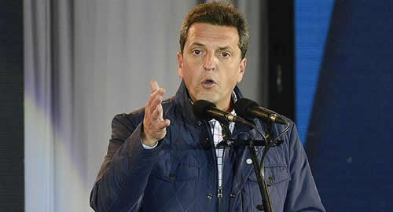

Real Chubut - Agencia de Noticias


Massa planea "volver" al peronismo para pelear en 2019

"Lo más urgente es ver cómo defendemos los porotos en octubre porque lo de las PASO fue un golpe duro". "Creíamos que el 20% era un piso para nosotros, pero vimos que no es así". "Vamos a tener que redefinir algunos ejes y contenidos, pero a esta altura no se puede cambiar demasiado". Un armador clave del Frente Renovador en la provincia de Buenos Aires, un dirigente de alta visibilidad y un miembro de la mesa chica de Sergio Massa definieron la realidad del sector en esos términos en diálogos con ambito.com. Y dejaron una definición más relevante, con 2019 en la mira: el objetivo concreto de comenzar a tejer una confluencia con sectores amplios del peronismo para dar la pelea grande en las próximas presidenciales.
"El 10 de diciembre, ni bien asuma el nuevo Congreso, habrá que empezar un proceso de evaluación y conversación permanente con la dirigencia peronista no vinculada a la corrupción", dijo el miembro de la mesa chica mencionado al comienzo. "Vamos a buscar a los peronistas que no banquen lo malo del kirchnerismo, lo que incluye a personas de esa etapa que también son rescatables. Lo importante es que compartan una mirada ética sobre los procedimientos de la política y que acepten la construcción de liderazgos no personalistas", agregó.
El mencionado armador bonaerense explicó que "la confluencia se dará con quienes entiendan que la tradición peronista debe aggionarse, porque hoy sigue anclada en el pasado. La lógica peronista todavía tiene mucho para decir sobre el trabajo, algo fundamental, porque solemos ser más compasivos en esos temas, pero entendiendo que el discurso tradicional está agotado". Una propuesta que no presenta ningún punto de conflicto con el "centro nacional" del que habla Miguel Pichetto.
El diagnóstico es que Cambiemos salió fortalecido de las PASO, aunque la medida de ello es motivo de discusiones. Además, que ese resultado se ratificará con pocos cambios en octubre y que ya urge replantear la estrategia de un massismo que, sin lograr nunca salir de la provincia de Buenos Aires, pasó de casi un 44 % en 2013 a un 21 % en 2015 y a menos de un 15 % en las últimas primarias. ¿Podrán defender este último umbral en octubre?
La idea central de lo que viene es que el método autónomo de construcción política de Massa, basado en una diferenciación tajante con respecto al espacio peronista, llegó a su fin. Que la decadencia electoral responde a una imposibilidad fatal de escapar a la lógica binaria de la política nacional. Y que lo que aún mantiene en votos puede parecer poco en términos absolutos, nacionales, pero que no es para nada desdeñable para jugar dentro del espacio peronista.
Un ejemplo de lo anterior: con su mala elección, Massa obtuvo en las PASO más de 1,3 millones de votos en Buenos Aires; mientras, la lista que responde al salteño Juan Manuel Urtubey, uno de los referentes que más fortalecido salió, sumó menos de 240.000. "¿Por qué Sergio debería sentirse fuera de juego?", se preguntan.
Ahora bien, ¿se trata de volver al PJ? No. Pero sí de plantear algún tipo de vinculación, algo de lo que "ya se habla con Sergio en las recorridas de campaña", dijo un hombre cercano al candidato a senador.
Desde la mesa chica se recalca que "fuera de la provincia de Buenos Aires, Sergio no deterioró a los peronismos locales en ningún distrito. Dialogamos y apoyamos a candidatos peronistas, desde Tierra del Fuego hasta Chubut, pasando por La Pampa, Entre Ríos, Corrientes y Río Negro". "Tenemos un mapa nacional, provincia por provincia, para trabajar con los dirigentes peronistas".
Consultado sobre esas políticas de aproximación, Raúl Pérez, uno de los hombres encargados por Massa de forjar relaciones entre el FR y el peronismo fuera de la provincia de Buenos Aires, destacó especialmente las figuras del rionegrino Martín Soria y del candidato a la Gobernación de Corrientes Carlos "Camau" Espínola. "Soria está destinado a hacer grandes cosas, es un hombre importante dentro de una nueva generación de dirigentes y seguramente va a ser gobernador. Y 'Camau' es otro protagonista importante de la nueva generación del peronismo", le dijo Pérez a ambito.com.
Cristina Kirchner es el gran escollo para este proyecto panperonista, mucho más ahora, cuando acaba de demostrar con su candidatura al Senado que está dispuesta a dar pelea personalmente para evitar la dispersión del espacio que gobernó hasta 2015 e, incluso, a romper con la estructura pejotista.
"Para pensar en 2019, hay que empezar ahora: nosotros le tenemos que pegar más Cristina que al Gobierno. Por un lado, porque para muchos votantes, Cambiemos representa una idea valiosa. Y segundo, porque los que venimos de una tradición peronista solamente vamos a poder ganar cuando ella salga definitivamente de la escena. Mientras esté vigente y siga dividiendo el voto opositor, el macrismo nos va a ganar toda la vida", dijo el referente bonaerense del FR.
"Es cierto que con ella en la cancha todo es mucho más difícil, pero la suya es una postura de patas cortas: en el sistema electoral argentino hay segunda vuelta...", recordó el asesor de Massa. "El voto K no está atado. Lo que hay que hacer es demostrarle a la gente que la insistencia de Cristina es funcional a Macri y que obstruye la construcción de un proceso integrador de la oposición", amplía.
La idea es clara. A corto plazo, resistir lo mejor que se pueda el vendaval polarizador que el Gobierno instalará de cara a octubre, que al massismo le puede costar todavía más caro que en las PASO. Hacia el futuro no tan lejano, aceitar los contactos con el peronismo no K, el bonaerense y el del interior del país. Con el tiempo, generar espacios de confluencia (el Congreso es un escenario ideal para eso). Y, ya cerca de 2019, pergeñar acuerdos que permitan dirimir candidaturas y presentar a Massa dentro de ese espacio como el receptor natural del voto útil opositor, capaz de ganarle primero a Cristina y en balotaje, a Mauricio Macri.
La reinvención del massismo está en marcha.